Connective Tissue Disorders
- Autoimmune CTDs: SLE (the commonest, 1 in 1,000, women 9:1), Sjögren's, systemic sclerosis (1 in 10,000), inflammatory myositis (1 in 100,000), MCTD. Shared: ANA positive, Raynaud's, multi-organ disease, women.
- SLE: malar rash (spares the nasolabial folds), photosensitivity, oral ulcers, non-erosive arthritis, serositis, nephritis (red cell casts), seizures/psychosis, cytopenias, ANA (> 95%), anti-dsDNA, anti-Smith (very specific), low C3/C4. 2019 criteria: ANA ≥ 1:80 to enter, then ≥ 10 points.
- SLE treatment: hydroxychloroquine for everyone (the anchor drug), sun protection, cardiovascular risk management; NSAIDs, steroids, immunosuppressants by severity. Antiphospholipid syndrome: antibodies + clots and/or pregnancy loss; venous → warfarin, arterial → antiplatelet; aPL in pregnancy → aspirin 81 mg.
- Sjögren's: dry eyes and mouth (cavities, parotid swelling), anti-Ro/La, RF, lymphoma risk. Myositis: proximal weakness + high CK; dermatomyositis adds heliotrope, Gottron's papules, shawl/V sign, mechanic's hands, and in older adults cancer; anti-Jo-1 = interstitial lung disease.
- Systemic sclerosis: fibrosis + vasculopathy + autoimmunity; sclerodactyly, Raynaud's in ~100%, severe reflux. The most lethal CTD (ILD, pulmonary hypertension). Renal crisis = ACE inhibitor. Raynaud's: keep warm, then nifedipine. Raynaud's + dilated nailfold capillaries + anticentromere: 1 in 3 develop SSc in 5 years.
Learning Objectives
- Identify patients whose symptoms suggest a connective tissue disease, and describe the distinguishing features of lupus, scleroderma and Sjögren's, and of myositis.
- Describe common rheumatologic blood tests (RF, ANA, ESR, CRP) and the expected results in SLE; when ordering them is inappropriate.
- Outline treatment with DMARDs and biologics, and their role.
Five recordings (73 min) by Dr. Janet Pope (rheumatology, St. Joseph's): CTDs and a lupus case, SLE criteria, SLE epidemiology and treatment with antiphospholipid syndrome, Sjögren's and myositis, and systemic sclerosis. ANA, ENA and complement are in 11.3. Face photographs (malar rash, heliotrope, parotid swelling) are described rather than shown.
Connective Tissue Diseases and Lupus
Collagen and elastic fibres are everywhere, so autoimmunity against them is multi-system.
The CTDs
| Disease | Prevalence |
|---|---|
| Systemic lupus erythematosus | 1 in 1,000 (the commonest) |
| Primary Sjögren's | About 2 in 10,000 (secondary Sjögren's with RA is commoner) |
| Systemic sclerosis | 1 in 10,000 |
| Polymyositis / dermatomyositis | 1 in 100,000 |
| Mixed and undifferentiated CTD | — |
All are commoner in women, usually have autoantibodies (almost always a positive ANA), often Raynaud's, and affect multiple organs. Knowledge check: Ehlers–Danlos (a collagen synthesis defect) and Crohn's (autoimmune, not a CTD) aren't autoimmune CTDs.
A Lupus Case
22-year-old student
New malar rash, a rash in the sun (photosensitivity), fatigue, Raynaud's, weight loss, hair loss, morning hand stiffness with knuckle swelling; a cousin with JIA.
Tests (for diagnosis, prognosis and treatment safety): CBC with differential, ESR, creatinine and urinalysis (kidneys), ANA, a pregnancy test; then ENA, anti-dsDNA and complement.
Results: WBC 2.8, Hb 111, platelets 43, normal creatinine and urine, ANA 1:320 speckled, anti-Smith positive, anti-dsDNA negative, low C3 and C4 → SLE.
The malar (butterfly) rash crosses the cheeks and nose but spares the nasolabial folds; rosacea runs into the folds (and has dilated vessels). Lupus = wolf.
Classification Criteria
Criteria are for research populations and are applied only if you already suspect lupus. Features count if ever present and not better explained.
 2019 EULAR/ACR criteria: entry ANA ≥ 1:80; ≥ 10 points with ≥ 1 clinical domain; only the highest item in each domain counts. Aringer, Ann Rheum Dis 2019, via the deck.
2019 EULAR/ACR criteria: entry ANA ≥ 1:80; ≥ 10 points with ≥ 1 clinical domain; only the highest item in each domain counts. Aringer, Ann Rheum Dis 2019, via the deck.
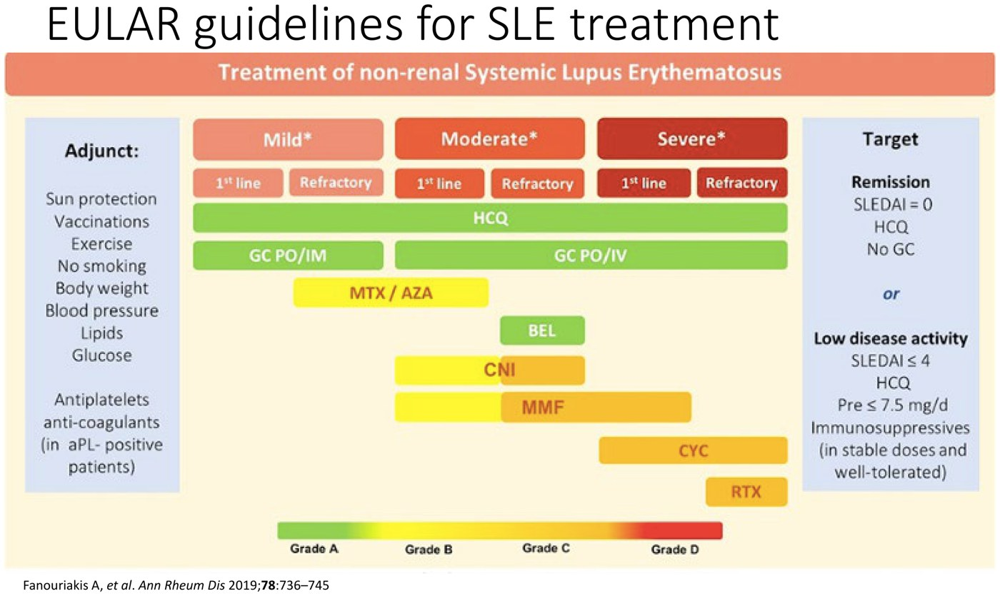
EULAR SLE treatment: hydroxychloroquine for all, escalating by severity. Fanouriakis, Ann Rheum Dis 2019, via the deck.| ACR 1982 criteria (4 of 11; still widely used) | |
|---|---|
| 1–3. Skin | Malar rash; discoid rash (raised, scaly, follicular plugging, scars); photosensitivity |
| 4. Oral or nasal ulcers | Often multiple, witnessed, sometimes painless |
| 5. Arthritis | Inflammatory, non-erosive (deformities can be reduced: Jaccoud's) |
| 6. Serositis | Pleuritis (pain on inspiration, effusion), pericarditis (pain lying down, effusion, ECG changes) |
| 7. Renal | Glomerulonephritis: protein and blood, red cell casts; nephrotic syndrome |
| 8. Neurologic | Seizures or psychosis not from drugs or metabolic causes |
| 9. Hematologic | Coombs-positive hemolytic anemia, leukopenia, lymphopenia, thrombocytopenia |
| 10. ANA | > 95% of SLE; a negative ANA makes SLE highly unlikely; healthy people often have a positive one |
| 11. Immunologic | Anti-dsDNA, anti-Smith (very specific), antiphospholipid antibodies |
Common but not criteria (1982): Raynaud's (25% of SLE) and alopecia (alopecia is in the 2019 criteria).
Lupus Rashes and Organs
- “Lupus loves rashes”: malar, discoid (deep, scarring), photosensitive (on sun-exposed skin; on the fingers it spares the knuckles, the opposite of dermatomyositis), livedo reticularis, vasculitis.
- Cutaneous lupus can be skin-only: discoid lupus is often skin-only; subacute cutaneous lupus (widespread, photosensitive, usually anti-Ro) is systemic in about half.
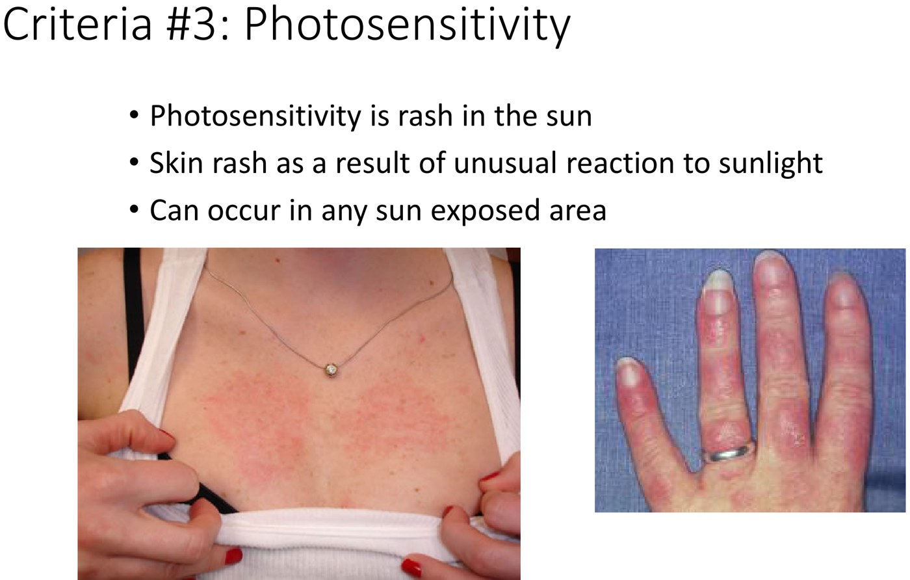
Photosensitive lupus rash: chest V and fingers (sparing the knuckles). From the deck.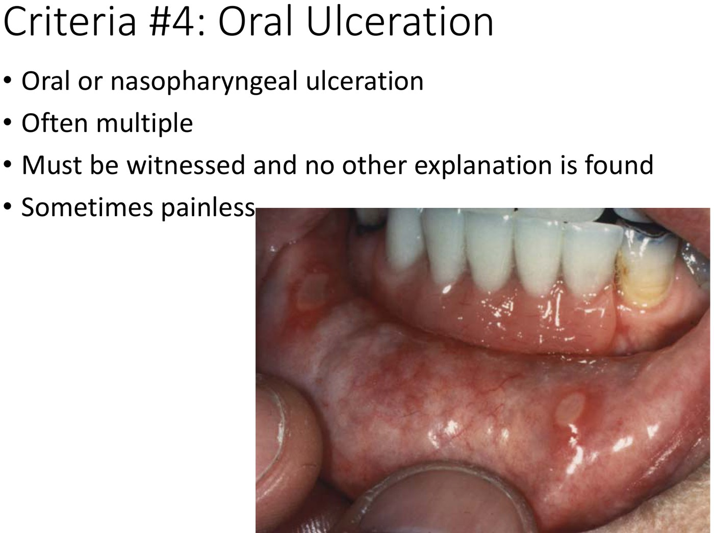
Oral ulcers: often multiple, sometimes painless. From the deck.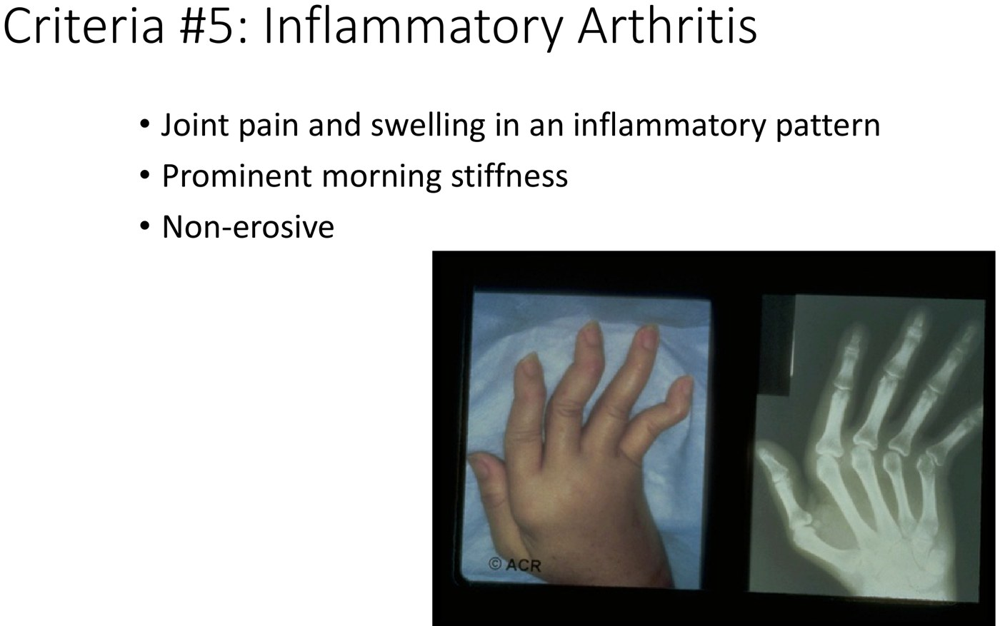
Non-erosive lupus arthritis: RA-like deformity, no erosions on x-ray. From the deck.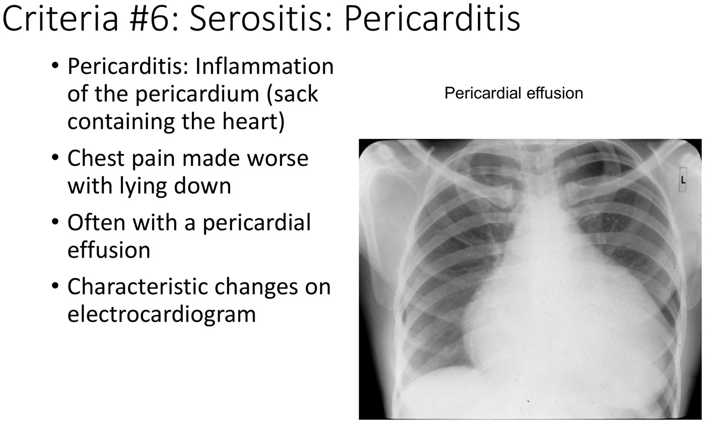
Serositis: a pericardial effusion (“a pumpkin in the chest”). From the deck.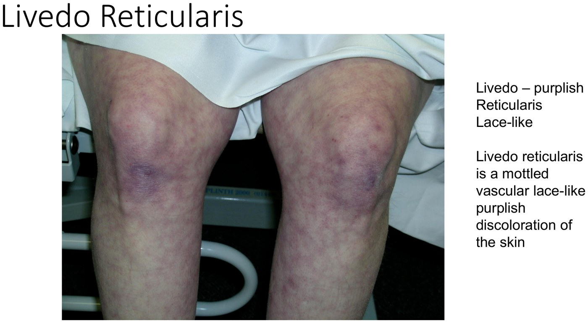
Livedo reticularis: lacy purple mottling; in SLE and especially antiphospholipid syndrome (nonspecific if transient). From the deck.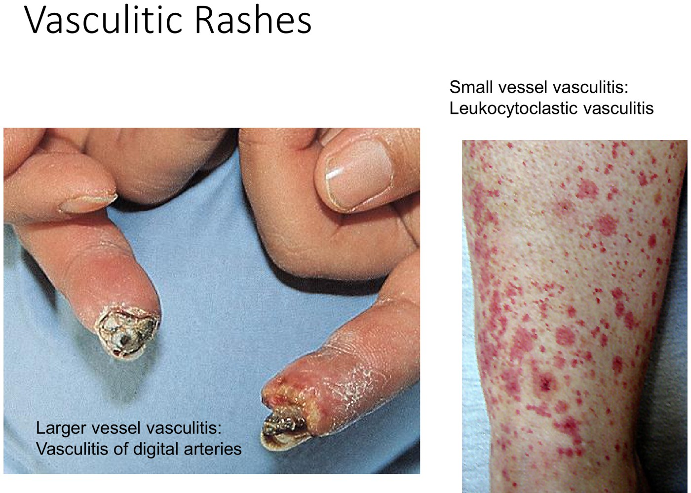
Vasculitis in CTD: digital arteries (fingertip loss) and leukocytoclastic purpura. From the deck.Lupus: Who Gets It, Why, and Treatment
- Women 9:1, young (any age possible), 1 in 1,000 (vs RA 1 in 100, middle-aged). Rarely drug-induced (milder: joints, skin, serositis).
- Polygenic + environment (UV light, smoking, infection, silica, hormones, drugs); HLA-DR2/DR3, complement deficiencies, the X chromosome. More apoptosis and slow clearance of nuclear debris give the immune system time to lose tolerance. Families cluster with other autoimmune diseases (RA, JIA, thyroid, MS, Crohn's, type 1 diabetes, psoriasis, celiac).
- Knowledge check: SLE is multifactorial (not a single gene), clusters in families, and is commoner in women and girls.
| Treatment | |
|---|---|
| Non-drug | Education, rest; sun avoidance and SPF 30+ (sun can flare skin and systemic disease); PT/OT; rheumatology follow-up; cardiovascular risk (more smoking, hypertension, lipids, diabetes, clots; ~50× cardiovascular events) |
| Hydroxychloroquine | Every patient unless contraindicated: the anchor drug, protects against major flares, helps skin and joints. (Knowledge check: hydroxychloroquine anchors SLE, methotrexate anchors RA.) |
| NSAIDs, corticosteroids | NSAIDs for joints; steroids topical (skin), low-dose oral (arthritis), high-dose (major organs) |
| Immunosuppressants | Azathioprine, methotrexate; severe: mycophenolate, cyclophosphamide, belimumab, rituximab |
Prognosis: worse with major organ involvement. Deaths from infection (immunosuppression), later accelerated atherosclerosis, and steroid harms (AVN, osteoporosis). So limit immunosuppression and treat cardiovascular risk.
Antiphospholipid Antibody Syndrome
Antibodies against cell-membrane phospholipids → clotting. Antibodies (anticardiolipin, lupus anticoagulant [falsely prolongs the PTT], anti-β2-glycoprotein I) plus recurrent venous or arterial thrombosis and/or recurrent pregnancy loss. Half is primary (knowledge check: it can be), half secondary, mostly with SLE. Rarely catastrophic APS, a “thrombotic storm” with high mortality. Often livedo reticularis and low platelets.
| Situation | Treatment |
|---|---|
| Antibodies, no events | Nothing, or aspirin 81 mg; aspirin if pregnant or planning (“baby aspirin for a baby”) |
| Venous clot (DVT/PE) | Warfarin (DOACs work less well) |
| Arterial event (stroke, TIA) | Antiplatelet |
| Recurrent events | Both |
Sjögren's and Inflammatory Myositis
Dry glands, then weak muscles.
Sjögren's Syndrome
Lymphocytic infiltration of exocrine glands (lacrimal, parotid, salivary) → sicca.
| Feature | |
|---|---|
| Dry eyes (xerophthalmia) | Gritty, painful, worse through the day; artificial tears; corneal lesions |
| Dry mouth (xerostomia) | Hard to swallow dry food, altered taste, trouble speaking, bad breath, dental caries (frequent dentist visits) |
| Gland swelling | Parotid (looks like mumps), submandibular |
| Extraglandular | Raynaud's, leukocytoclastic vasculitis (purpura on the legs), inflammatory arthritis, peripheral neuropathy, rarely ILD |
| Lymphoma | Higher risk (chronic gland inflammation) |
| Labs | Anemia of chronic disease, leukopenia, polyclonal hypergammaglobulinemia, very high ESR, ANA 80–90%, RF often, anti-Ro and anti-La |
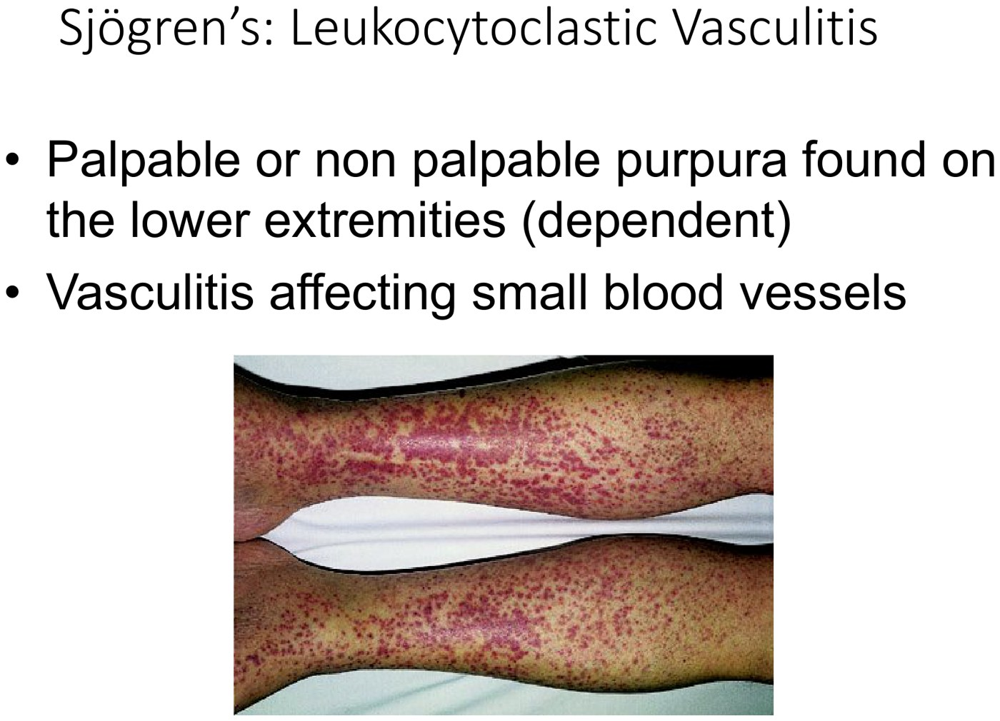
Knowledge check: severe dry eyes and mouth
3 years of dry eyes (now a corneal ulcer), repeated cavities, swollen wrists and MCPs → Sjögren's. Order CBC, ANA, creatinine and urinalysis (± RF). If ANA positive, an ENA for anti-Ro/La, or just refer. Sjögren's carries a higher lymphoma risk and can occur with RA, SLE and systemic sclerosis.
Inflammatory Myositis
Inflamed muscle causing proximal weakness (shoulders, hips, neck; trouble getting out of bed). Pain that makes a muscle give way isn't weakness. Two types: polymyositis and dermatomyositis.
| Causes of proximal weakness (rule these out) | |
|---|---|
| Drugs | Steroids (myopathy without inflammation), statins, colchicine, hydroxychloroquine, cyclosporine |
| Toxins | Alcohol |
| Endocrine | Thyroid (hypo and hyper), parathyroid, adrenal |
| Electrolytes | High or low K, low PO4, low Mg |
| Other | Sarcoidosis, infection (influenza), inflammatory, malignancy |
| Dermatomyositis | Polymyositis | |
|---|---|---|
| Age | Peaks in children and older adults | Any age |
| Skin | Rash, photosensitivity | None |
| Cancer | Paraneoplastic in the elderly (not in children); think of it with an ulcerating rash | Usually not |
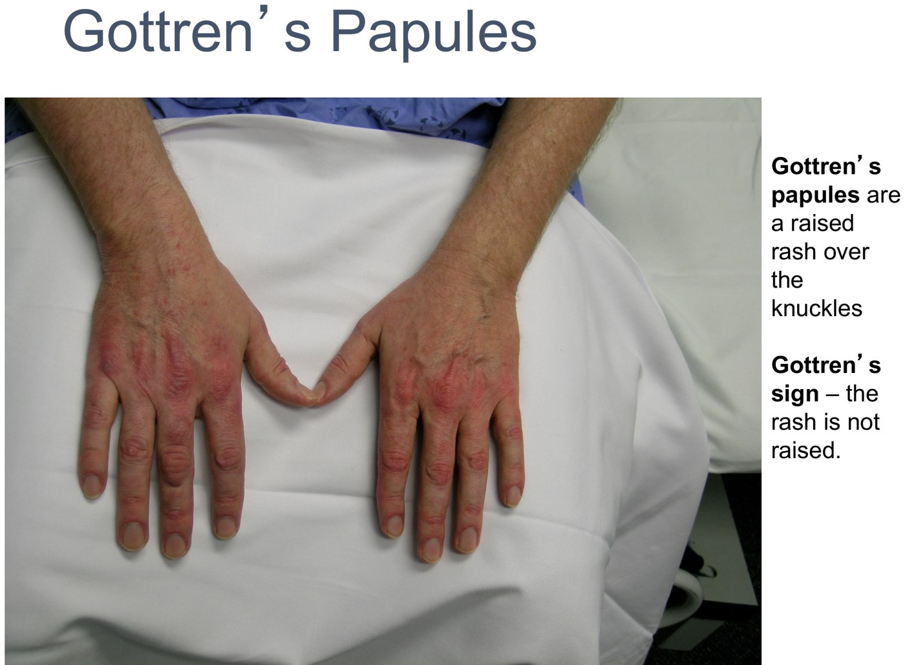
Gottron's papules over the knuckles (raised; flat = Gottron's sign). From the deck.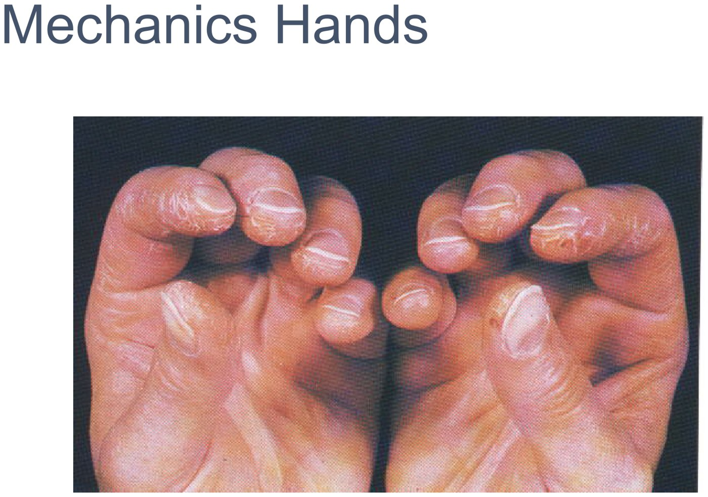
Mechanic's hands: cracked, hyperkeratotic radial fingers. From the deck.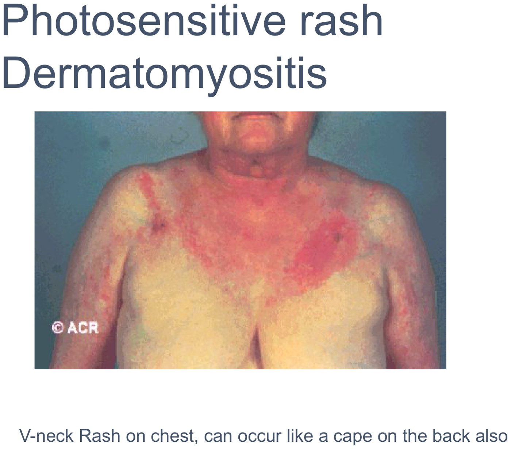
V-neck rash (a shawl on the back). © ACR, via the deck.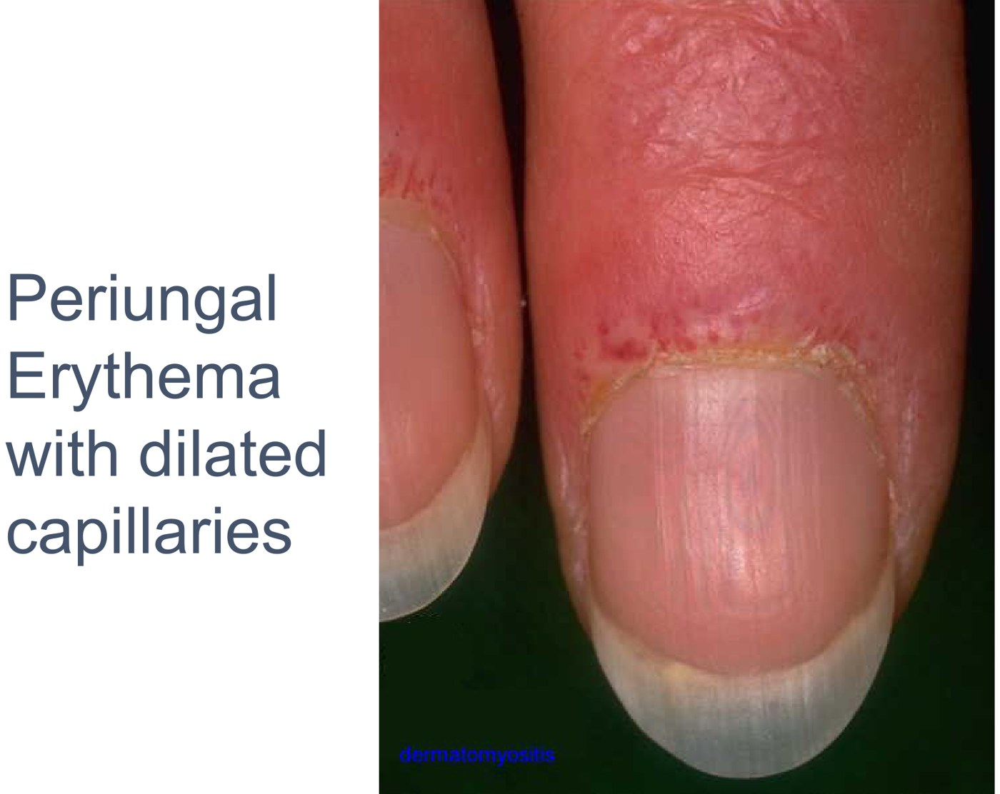
Periungual erythema with dilated capillaries. From the deck.Other dermatomyositis signs: the heliotrope rash (purple-pink eyelids), livedo, calcinosis. Antisynthetase syndrome = myositis + specific antibodies (e.g. anti-Jo-1) + rash + ILD.
| Labs | Concerning features |
|---|---|
| Raised CK; ESR up in about half; ANA in about 80%; anti-Jo-1 → interstitial lung disease (bad prognosis); PM/Scl in scleroderma overlap | Esophagus (dysphagia, aspiration), heart (arrhythmia, failure), lungs (ILD, diaphragm weakness), cancer (adenocarcinomas: ovary, prostate, colon, stomach, lung, breast) |
Treatment: high-dose prednisone + a steroid-sparing drug (azathioprine, methotrexate, cyclophosphamide, IVIg, rituximab); prevent steroid osteoporosis, watch glucose and lipids; lung disease needs aggressive specialist care. A classic dermatomyositis picture (weakness, Raynaud's, knuckle rash, high CK) is a clinical diagnosis, no biopsy or EMG needed.
Systemic Sclerosis and Raynaud's
London, Ontario is known for scleroderma research.
Systemic Sclerosis (Scleroderma)
A rare CTD (1 in 10,000) with a triad: fibrosis (collagen in skin and organs), vasculopathy (intimal proliferation, Raynaud's, obliterated vessels) and autoimmunity (knowledge check). Unlike other CTDs, there's no vasculitis. Not the same as skin-only morphea or linear scleroderma.
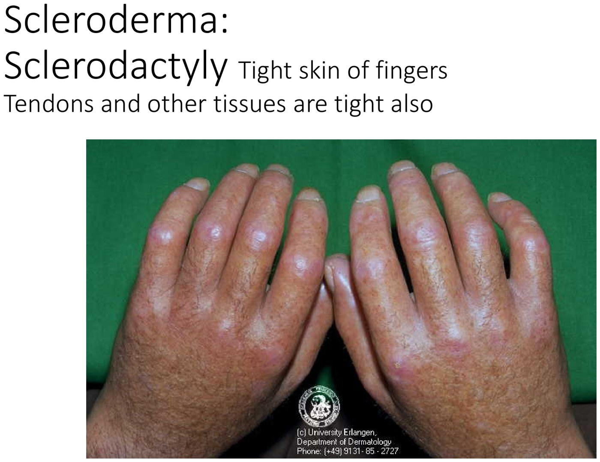
Sclerodactyly: tight finger skin, fingers that can't straighten or make a fist. From the deck.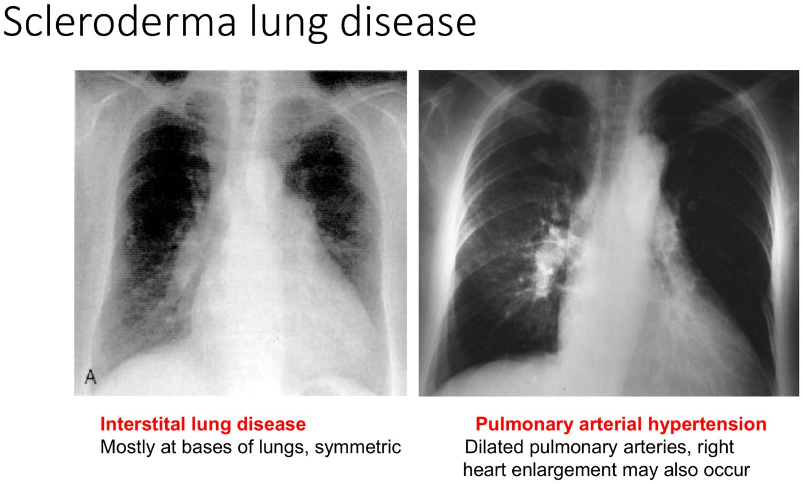
The two killers: basal ILD and pulmonary arterial hypertension. From the deck.| 2013 ACR/EULAR criteria (Dr. Pope is the senior author) |
|---|
| Sufficient on its own: skin thickening of the fingers of both hands extending proximal to the MCPs |
| Otherwise add points for: puffy fingers or sclerodactyly; fingertip ulcers or pitting scars; telangiectasia; abnormal nailfold capillaries; pulmonary arterial hypertension and/or ILD; Raynaud's; SSc antibodies (anti-centromere, anti-Scl-70 [topoisomerase I], anti-RNA polymerase III) |
| Limited cutaneous (lcSSc) | Diffuse cutaneous (dcSSc) | |
|---|---|---|
| Skin | Distal to elbows and knees (+ face) | Also proximal: upper arms, thighs, trunk |
| Antibodies | > 95% ANA; ~50% anti-centromere | > 95% ANA (often nucleolar); anti-Scl-70 (~30%, with pulmonary fibrosis); anti-RNA pol III (renal crisis) |
| Organs | Renal and heart rare, less lung; PAH in long-standing disease | More of everything (skin, heart, kidney, ILD); PAH about equal; higher mortality |
“CREST” (calcinosis, Raynaud's, esophageal dysmotility, sclerodactyly, telangiectasia) is an older name for limited disease; it's dropped because both subsets can have all five.
| The “15% rule” | |
|---|---|
| Nearly all | Raynaud's, GERD (severe: a lax lower esophageal sphincter and a “lead pipe” esophagus); many have dysphagia; half ever have digital ulcers |
| About 15% each | A digital ulcer at any time (15% of those complicated: gangrene, osteomyelitis, amputation); significant ILD; PAH; inflammatory arthritis; Sjögren's; myopathy/myositis; renal crisis (in diffuse disease) |
About half of patients die of the disease: pulmonary fibrosis (ILD) and pulmonary arterial hypertension are the main causes, then heart involvement. Scleroderma renal crisis (sudden severe hypertension, intravascular hemolysis in half, renal failure in half) was a big killer: 80% mortality unrecognized, < 20% with an ACE inhibitor.
Treatment is by organ: methotrexate for early diffuse skin; immunosuppression for lung disease; autologous stem cell transplant prolongs survival in severe early diffuse disease (not a cure).
Raynaud's Phenomenon
Reversible colour change of the digits on cold: pallor (white), then cyanosis (blue) and/or rubor (red) on rewarming. In 3% of people, 25% of SLE, ~98–99% of systemic sclerosis (where it's most severe).
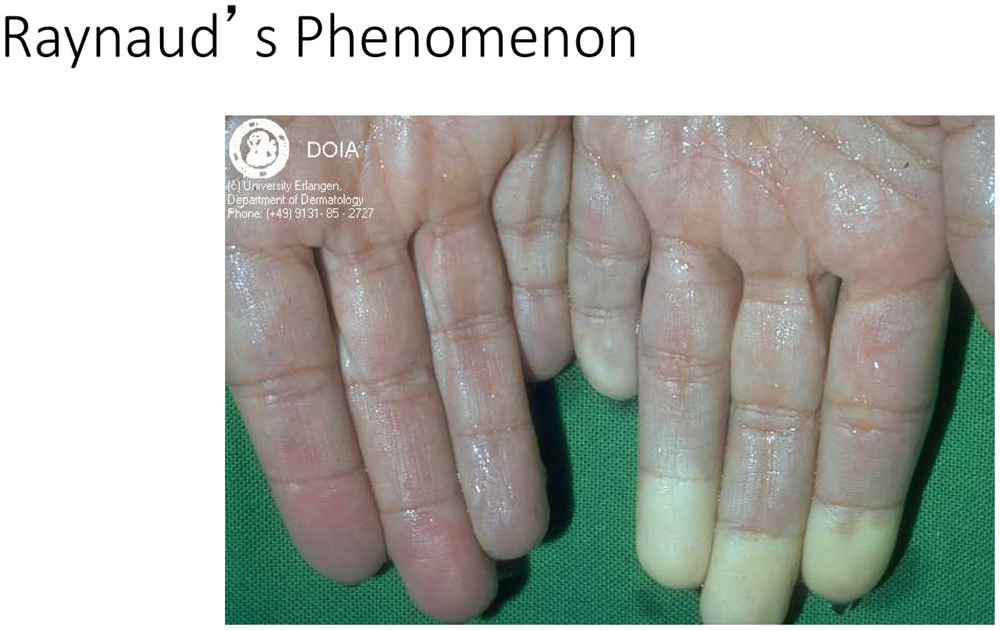
Raynaud's: well-demarcated pallor. From the deck.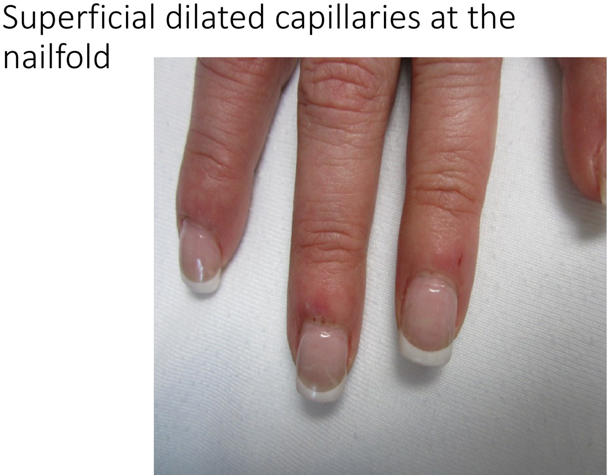
Dilated nailfold capillaries: the sign that makes Raynaud's worrying. From the deck.| Primary (Raynaud's disease) | Secondary | |
|---|---|---|
| What | Vasospasm alone | With a disease, mostly a CTD |
| Clues | Young, otherwise well | Late onset (a red flag), dilated nailfold capillaries, digital ulcers, positive ANA |
Raynaud's + dilated nailfold capillaries + anti-centromere (centromere-pattern ANA): 1 in 3 develop scleroderma within 5 years. Knowledge check: the least likely to develop SSc is the medical student with Raynaud's and reflux relieved by antacids; late-onset Raynaud's with puffy fingers or anticentromere is high risk.
| Treating Raynaud's |
|---|
| Avoid cold (hat, mitts not gloves, hand warmers, warm feet), stop smoking |
| Calcium channel blocker (nifedipine): the main drug |
| Severe: PDE5 inhibitors, topical nitrates, IV prostacyclin (iloprost), other vasodilators |
Match the CTD
| Presentation | Diagnosis |
|---|---|
| Rash in the sun, mouth and nose sores, ANA and anti-dsDNA positive, blood and protein in the urine | SLE |
| Dry eyes and mouth, new cavities, parotid swelling, ANA, Ro and La positive, leukocytoclastic vasculitis on the shins | Sjögren's |
| Retrosternal dysphagia, tight skin of hands, arms and face, basal crackles, nucleolar ANA, anti-Scl-70 | Systemic sclerosis |
| Proximal weakness, new Raynaud's, rash over the knuckles, high CK | Dermatomyositis |
| Proximal weakness, high CK, no rash | Polymyositis |
| Repeated clots, livedo reticularis | Antiphospholipid syndrome |
| Interstitial lung disease | Any, but commonest in SSc (and myositis) |
Built from Dr. Janet Pope's “Connective Tissue Disorders” deck (CTDs, SLE criteria, SLE epidemiology and treatment with APS, Sjögren's and myositis, systemic sclerosis), its five recordings and the module's knowledge checks. Face photos (malar rash vs rosacea, discoid lupus, heliotrope, parotid swelling, the mother and daughter with lupus) are described in the text; the 2013 SSc criteria table didn't render from the PDF and is written out. Notes: the deck's “choose the best CTD” slide gives polymyositis for “proximal weakness, elevated CK” while the recording says “inflammatory myositis such as dermatomyositis”; without a rash, polymyositis is the better answer. Sjögren's RF positivity is “90%” on the slide and “many” in the recording.